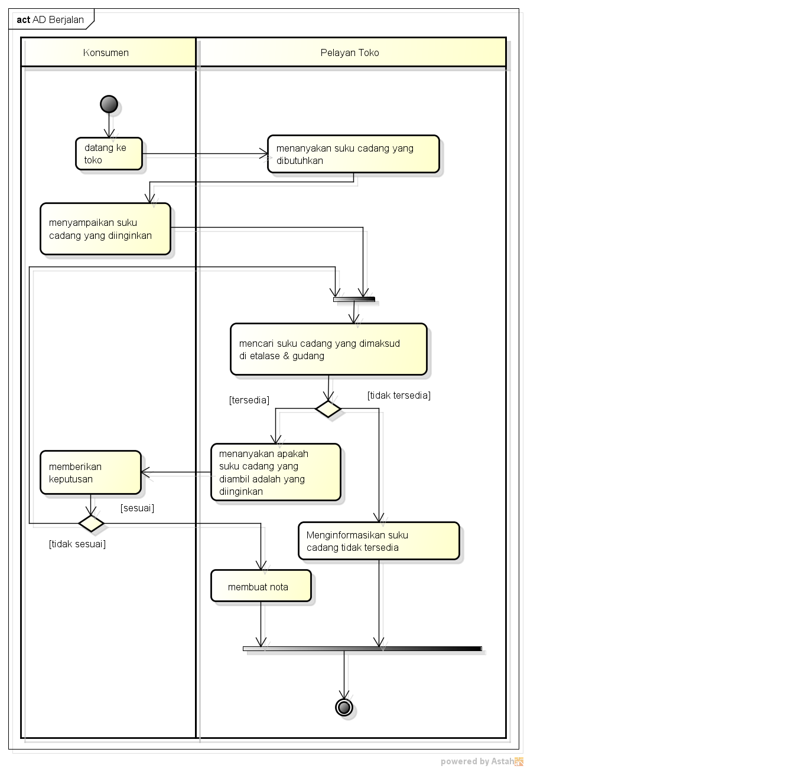

Nim : 1811500044
Nama : Jukardi Afriyansyah
Kelompok : TI6J
hasil saya menyadur di pertemuan 2:
- Perhitungan nilai kehadiran cukup menggunakan file index.html di setiap direktori github (angka), contoh 2 utk pertemuan 2
- Perhitungan nilai tugas, dari kualitas konten dengan menggunakan file index.html tiap pertemuan yang saya sadur
hasil file project astah Download
